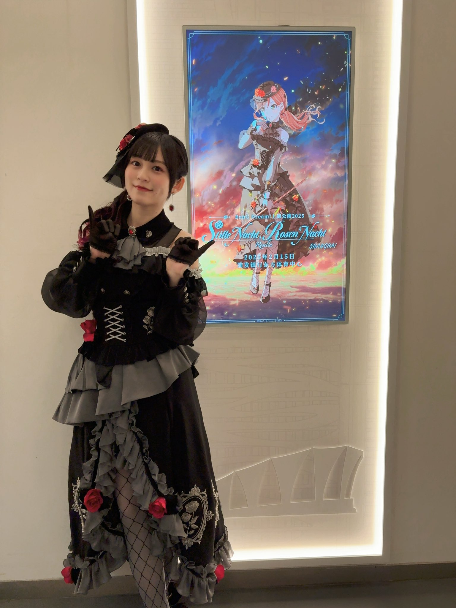
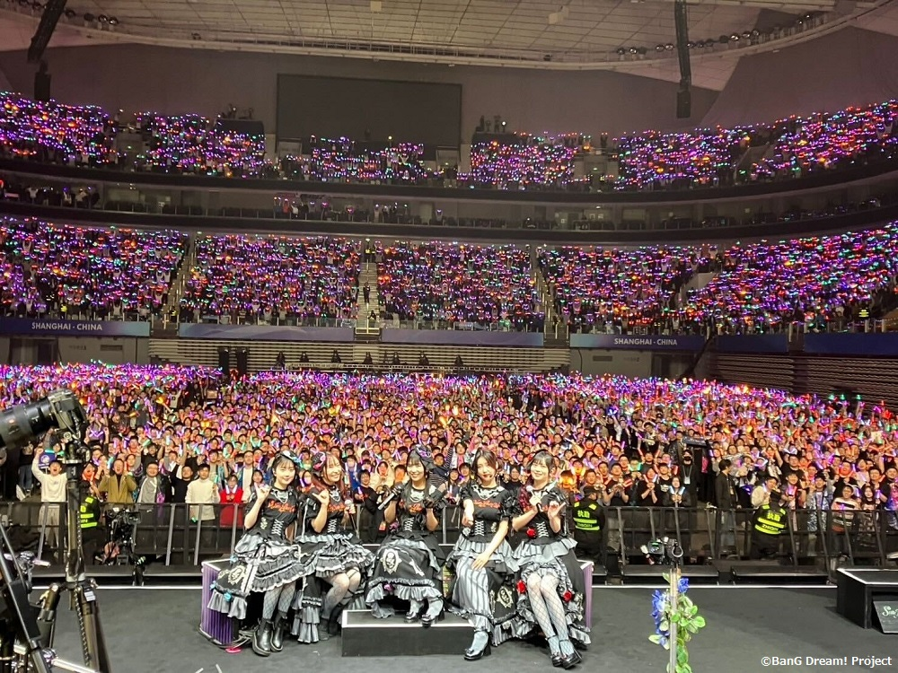
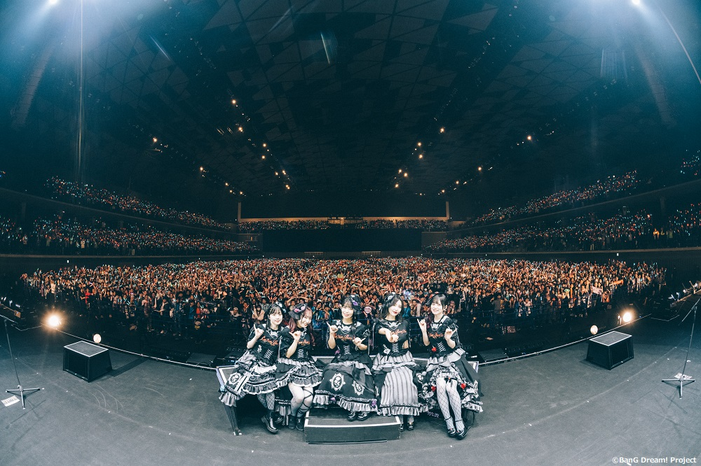
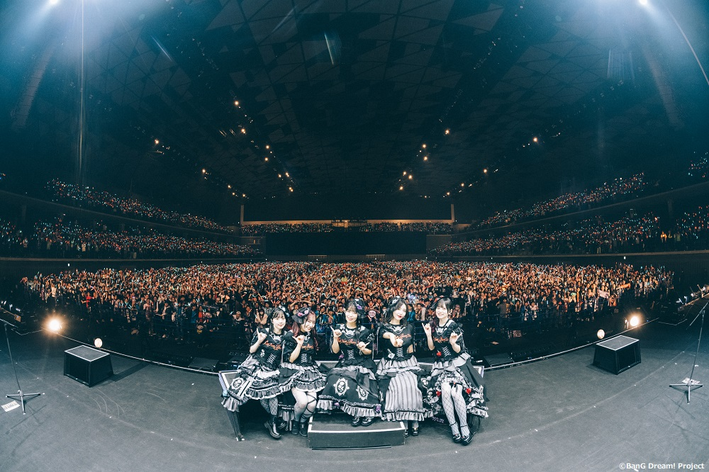

Roselia Live 「Stille Nacht, Rosen Nacht」上海官方返图
时间：2025-02-16
分类：BanG Dream!
这是“老婆们”的照片返图……嘿嘿……
 
如何从零开始进行程序设计
时间：2025-01-13 作者：Jiaqi Z.
分类：小教程-机器学习与人工智能
这一篇虽说是放在机器学习分类下，主要是为课题组内的同学所准备的，但这篇文章所说的一些想法，可能也适用于大多数程序设计的过程（无论是在科研过程中需要写程序、或者是做程序设计课程的课程设计等）。
本篇不会讲解具体的程序设计语言，例如Python、C语言等，而是一种通用的思考方法，可以帮助你更快上手进行一个较大的程序设计。
第一步：明确问题与需求
永远不要一开始就敲代码，仔细思考一下：要解决什么问题。大多数编程活动都是任务驱动或者问题驱动。例如，对于在校大学生而言，写程序可能是为了解决课本上的一个问题，或者老师的一个任务需求，又或者是论文上需要的一部分；对于软件工程师而言，写程序可能是为了实现产品经理的一个特定的需求，或者修复用户提出的一个bug等。盲目开始写程序，总是不可取的。
同时，在明确问题与需求之后，需要考虑的是：这段代码应该使用什么程序语言设计？例如，如果你是希望做机器学习与神经网络相关的，显然Python是更适合的；而像物理专业的一些理论计算，比如解方程等任务，可能使用MATLAB或者Wolfram Mathematica更方便；如果你是做嵌入式单片机的，那几乎就是C语言设计的……总而言之，选择一个合适的程序语言可能会让你的程序设计过程事半功倍。
如果你确实不知道该用什么编程语言的话，试试Python吧
第二步：拆分任务
程序设计的思维一定是模块化的思维，如果一个程序很小，例如判断一个数字是不是质数、或者使用欧几里得算法判断两个数字的最大公因数 等，只需要完成这一个任务就足够了。但通常情况下，使用程序解决的问题往往会很复杂，可能需要多个模块相互配合。这就如同一个公司要进行经营，需要各个部门的配合，其中每个部门都负责自己的内容，最后将其整合起来成为一个完整的公司架构一样。写程序的时候，也应当将任务进行拆分，拆分成一系列的“小任务”（也可以看作模块）。这个模块的大小可以因人而异（或者在具体的软件开发中，可能开发组内又有另外的分工），对于初学者而言，可能程序算法不是太熟练，此时可以将模块尽可能的小。例如，现在希望制作一个值日表安排程序，将一个时间段按照日期，每隔一定天数安排一个人，一共有6个人，按照顺序依次分配。此时我们的程序可能会拆分成这样几个任务：
生成日期-按照一定间隔取出日期-按照顺序安排6个人
注意：这些任务的划分是取决于程序设计者本人的（或者取决于项目开发组的）。
第三步：对每个任务进行拆分，设计步骤
有了具体的任务之后，我们就可以“逐一攻破”了。在程序设计的过程中，我们需要对每个任务进行进一步划分，将其划分为有限次数的步骤（这就是算法），这些步骤应当是确定的。例如，在上面的例子中，我们可能需要做这样几个算法（这些算法的每一步并不一定是一行代码，可能是多行代码，甚至有些步骤本身可能足够复杂到成为一个“任务”了）
- 读取起始日期和结束日期(yyyy1-mm1-dd1和yyyy2-mm2-dd2)
- 定义一个空的列表
dates（这个列表是广义上的列表，它可能是C语言中的数组，也可能是MATLAB等程序中的向量，也可能是Python中的列表） - 定义
i←0 dates[i]←yyyy1-mm1-dd1（这里面的←是一个比较常见的算法符号，表示将右面的值赋值给左边的变量）i←i+1- 查看
yyyy1-mm1-dd1+1（表示“下一天”）是否“小于等于”yyyy2-mm2-dd2，如果是，则进行第7步，否则进行第9步 yyyy1-mm1-dd1←yyyy1-mm1-dd1+1- 返回第4步
- 输出
dates列表
可以注意到，以Python为例，像第2步，第3步这些都是可以用一行表达式如dates=[]和i=0进行表示；但类似于第6步，查看某一天的下一天并不是一件“易事”（因为它涉及到一个月的最后一天的判断，甚至可能包括平年闰年的判断等），同时判断一天是否“小于”另一天也不是单纯的比较大小（可能需要三个数的比较），因此，我们可能会把第6步作为一个函数处理（完全可以把“函数”也看作是一种“任务”，但为了与前面的任务区分，我们这里使用“函数”，从程序设计的角度看，函数里面调用函数本身就是合理的）
第四步：从底层开始编写代码
这一步难度应该是“最低”的，因为它实际上就是用计算机语言把你前面所想的步骤表示出来。但是，在写代码的时候，有一些小技巧可以注意：
- 善用测试：任何人都不敢说可以一次写出正确的程序，大多数时间应当是调试、修改代码。因此，发现程序报错并不可怕，重要的是如何找到错误的地方。如果是一次性写完再测试，那工作量太大，且错误的可能性太大，因此，我们可以每写完一个任务或者一个函数，就测试一下函数的准确性。在测试的时候，可以在程序中以变量赋值的方式给定一些测试数据，或者使用像Python的
input()函数，以及C语言的scanf()等方式进行终端的输入（通常直接变量赋值是最方便的）。在输出时可以简单的终端输出，或者根据需要选择像文件输出等方式来判断输出格式的正确性。通常，在涉及底层算法时，其测试可以简单的终端输入输出；而涉及到交互时，可能会需要一些其他的方式（有时这可能需要前后端的配合，但从程序设计“哲学”的角度来看，前后端分离是必需的。）
还是以上面的例子为例，假设我们现在完成了函数addDate(date)函数，给定date函数返回它的下一天。在测试时，我们可以仅仅调用这个函数，给定几个特殊的date（例如，2024年2月28日、2025年2月28日、2023年5月30日、2025年1月8日、2024年12月31日等，可以看到，这里面包含了一个月最后一天，一年最后一天，平年闰年2月的判断，以及常规的日期），通过这几个测试例，可以很容易判断这个函数是否实现的预期的功能。如果测试通过了，可以想见，它在后面的程序中大概率也是正确的，如果测试不通过，一个函数的代码量也是比较小的，容易发现其中的错误。
以我个人的习惯为例，在完成一个函数时，我喜欢对其进行一个小的测试，判断它的功能是否正确；在完成一个大的任务时，我喜欢对其进行一个测试，判断它是否可以正确完成这个任务；在整个程序完成后，再对其进行测试，通常这时候就是判断各个任务之间的“衔接”是否合理。一个需要记住的是：越在早期排查出错误，越能避免后期造成更大更隐蔽的错误
-
善用AI：现在的程序设计，几乎AI是不可避免的。我也不反对程序设计中使用AI来生成一些代码。但是，需要特别注意的是：最多使用AI生成一个函数，千万不要使用AI生成一个“任务”，甚至整个程序，AI还没有那么强大，大概率会失控。此时出现的错误，非常难以排查。使用AI生成一个函数，甚至10行左右的语句实现一个功能，如果出现错误，人为排查是很方便的（详见第1条的善用测试）
-
平地起高楼，地基要打好：还是要本着底层设计的思路，千万不要想着“一口吃成个胖子”，再天才的程序员也做不到一次性写出上千行代码。慢慢来，一步一步来，从简单的开始像“搭积木”一样，最终实现复杂的功能不是难事。而且，不要羡慕别人能写几千、几万行代码，再复杂的代码也是由若干个功能实现的，可能每一个功能也就几十行代码。利用上面的方法，你也可以写出上千上万行代码。
-
一定要写注释！：把每一个函数做了什么，每一部分干了什么记录下来，在后期进行整合时会很容易（要不然你一定会“眼花缭乱”的）
双曲型、抛物型和椭圆型偏微分方程的区别
时间：2025-01-08 作者：Jiaqi Z.
分类：小教程
在数学物理方程（偏微分方程）中，我们了解了波动方程、热传导方程和泊松方程（或者拉普拉斯方程），并且也说，它们三个方程分别属于双曲型、抛物型和椭圆型。并且在“标准型”的讨论中，也了解了这些类型与存在直接相关的关系。
当听到“双曲”、“抛物”和“椭圆”时，免不了会联想到圆锥曲线，可以证明（或者其他教材中所说的那样），任何一个圆锥曲线，都可以写作下面的方程所表示的曲线
假设我们现在令和分别表示和，且等式两边同时作用于函数，则可以将上面的“圆锥曲线”写作下面的偏微分方程：
从而将这两个方程画上了“等号”。既然如此，我们就可以利用圆锥曲线的“形状”来定义微分方程的“类型”：
我们这里姑且不考虑参数，即只考虑最简单的这一“二次方程”。
-
假设这是一个椭圆方程，则利用已知的椭圆方程定义 不难得到，且，因此定义一个，可以得到对椭圆而言，
-
对于抛物线而言，假设一个最简单的方程 可以很容易得到且（若抛物线方程为，则），类似带入上面的定义，可以得到对抛物线而言，
-
对双曲线而言，其定义为 可以得到，从而对双曲线而言，。
代回微分方程
类似的讨论方法，让我们依次对三种“基本方程”进行讨论（假设我们只考虑齐次方程，因为非齐次项不影响方程类型）。
-
波动方程，其基本形式为 很显然，，利用圆锥曲线的讨论，这一判定式说明它是双曲型。
-
热传导方程，其形式为 其中，，从而，是抛物型
-
Laplace方程，其形式为 从而，判断，是椭圆型
关于杂谈的内容
时间：2024-12-23 作者：Jiaqi Z.
分类：杂谈
对于这个个人网页来说，目前已经成一定样式了，但总感觉还差点东西。差一点我自己的东西（当然，这网页里面每一个都是我自己写的）想了想，感觉还是做一个这种类似于博客性质的网页。正因如此，这个网页诞生了。
关于作者
与我的个人网页类似，这里面的作者大多数都是我，包括但不限于
- Jiaqi Z.
- “7小七Seven”以及其他类似如“小七Seven”、“小七”等名字
- Nana_Chan
- “Nana_L”或“Nana_R”
- “なな”或者带有叠字符号的“なゝ”（目前还没有使用片假名“ナナ”作为笔名）
- ……
但是，这里的作者也可能包括其他从别的网站转载的内容，或者课题组内其他人所写的内容，都会按部就班设置作者。
关于文章类型
目前共设置以下几种文章类型：
- 小教程：指的是一些单独的、或者目前还没有汇总在一起的教程，可能是课程的学习资料分享，也可能是一些小软件、小工具的使用方法等（注意：关于材料计算和机器学习两个分类，请在点开后打开对应内容查看）；
- 科普：指的是一些给非相关专业的人看的文章，有些也可能是计划发在“科普小白说”公众号的草稿（相比于公众号里面的内容，这里的可能更加简单，随性）
- BanG Dream!：指的是一些关于BanG Dream!游戏的内容，一些玩游戏过程中的想法，一些音乐、图片分享，甚至可能包括游戏晒卡等都会在这里（当然也不排除有一些发电内容）
- 桌游：关于一些桌游相关的文章，有些可能是桌游规则整理、或者是一些桌游的感悟等。当然，关于桌游评测与桌游照片等，请去相关网页查看
- 音乐：一些关于音乐的相关内容，可能是分享一些歌曲，或者可能自己写了（或改了）一首歌也会发在上面，也有可能是关于音乐理论的文章
- 游戏：一些关于游戏的内容（这里面的游戏主要指除BanG Dream!和桌游以外的那些游戏，主要是电子游戏）
- 杂谈：一些目前还不知道该放在哪个分类下，或者确实不知道应该放在哪里的文章。
你也可以在左侧通过“全部内容”查看所有文章。其中有些文章可能属于多个分类，例如，关于BanG Dream!的音乐改编，有可能同时放在BanG Dream!和音乐两个分类下；关于音乐乐理的介绍，有可能放在“科普”或者“小教程”和“音乐”分类下。
更新频率
这个……就不好催更了吧……（没必要要求我每天都写杂谈吧）
联系方式
- QQ:3585318203
- 邮箱：zhangjq_sd@163.com
- Bilibili：UID 123645189
- Github：github.com/JackyZhang00
- 其他相关联系方式请通过主页对应分类查看
Roselia Live 「Stille Nacht, Rosen Nacht」官方返图
时间：2024-12-23
分类：BanG Dream!
 

Linux当中for与VASPKIT“联动”
时间：2024-12-25 作者：Jiaqi Z.
分类：小教程-材料计算
在对VASP计算结果进行批处理时，有时需要借助于VASPKIT生成的文件，或者使用VASPKIT对数据进行分析。此时需要使用for循环，或者在脚本语言中实现对VASPKIT菜单的调用。
简单来说，我们希望找到一种命令的调用方法，模拟用户输入选项。而这种方法就是借助于echo命令和管道运算符。
注意：建议提前阅读教程内关于“高级Linux命令”一章的内容。
方法1
使用echo -e选项输出带有转义字符的文本，并借助于管道运算符|将输出的内容传递到vaspkit当中。例如，如果希望一次性生成静态计算的INCAR文件，可以直接写作：
[7Seven@localhost ~]$ echo -e "1\n101\nST" | vaspkit
运行后就可以看到vaspkit如同正常操作一般按照顺序执行对应的内容。其中，\n转义字符表示回车，即模拟用户进行回车操作（确认输入内容）
方法2
使用分号（;）依次表示所有的命令，并使用echo组合传递给vaspkit。例如，上述例子还可以写作：
[7Seven@localhost ~]$ (echo 1; echo 10; echo ST) | vaspkit
其中使用括号表示将括号内所有内容传递给vaspkit。在这一基础上，可以进一步做更复杂的操作。
在上述方法的基础上，可以使用for循环组合进行批量处理，并进行更复杂操作。例如，将所有当前目录下所有子目录内生成带有D3校正的静态计算INCAR文件，可以写作：
[7Seven@localhost ~]$ for i in *; do cd $i; echo -e "1\n101\nSTD3" | vaspkit; cd $OLDPWD; done
注意事项
vaspkit的调用方法取决于不同服务器，以所在服务器为准；- 在使用时，建议首先进行测试，确认vaspkit的选项顺序，在确保正确后再进行批量处理；
- VASPKIT参考文献：V. Wang, N. Xu, J.C. Liu, G. Tang, W.T. Geng, VASPKIT: A User-Friendly Interface Facilitating High-Throughput Computing and Analysis Using VASP Code, Computer Physics Communications 267, 108033 (2021). https://doi.org/10.1016/j.cpc.2021.108033